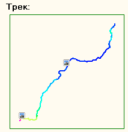
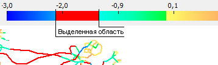

Два типа проектов
У программы две модификации:
Трек-Альбом: Дневник Путешественника - для туристов, путешественников, велосипедистов, лыжников. подробнее...
Трек-Альбом: Летная Книжка - для пилотов парапланов, дельтапланов, планеров. подробнее...
На самом деле дневник путешественника, журнал записей для наземных видов спорта и летные книжки для воздушных видов спорта можно вести все в одной программе, в одной модификации!
Причем программа учитывает особенности разных типов проектов, что выгодно отличает ее от электронных таблиц общего назначения.
Ведение записей Ваших полетов/поездок
К записям можно прикреплять GPS треки, но Вам не обязательно иметь GPS что-бы вести учет. К записям можно писать текстовые заметки, а так-же есть все необходимые поля (с системой автозаполнения) для получения нужной статистики.В новой версии сильно лучшен редактор заметок, теперь он поддерживает BBCodes (форматирование, ccылки...) и содержимое может быть без изменения скопировано в популярные форумы! Подробнее...
Расширенные функции работы с фотографиями
Фотографии можно не только прикреплять к записям, но и смотреть их метаданные, такие как - время съемки, выдержка, диафрагма - полезно для продвинутых пользователей.Но самое интересное - теперь программа по треку и времени съемки может определить координаты, где была сделана фотография и показывает ее позицию на треке!

В файл фотографии можно записывать GPS координаты места где была сделан кадр, как в ручном таки и в автоматическом режимах Подробнее...
Скачивание треков и точек с GPS
Наиболее частые функции, необходимые тем у кого есть GPS. Так-же возможно загружать точки в GPS. По скачанному треку сразу можно сделать запись в журнале, при этом некоторые поля будут заполнены автоматически. На данный момент поддерживаются устройства Garmin, Magellan, IQ-Compeo, Competino, MLR, Flytec, Top Navigator, XC Trainer, Log It, Digifly GraviterПодробнее...
Поддержка разных форматов хранения треков и точек, импорт треков и точек
Программа умеет читать самые популярные форматы: IGC, OZI, TRK, GPX, WPT. Внутренний формат хранения треков и точек - открытый формат GPX.Анализ треков, частей трека
Можно выделить интересующий кусок трека и посмотреть детально скорость, перепад высот, скороподъемность, крутизну трека и др. параметры. Удобная особенность: не надо каждый раз щелкать по меню - параметры показываются сразу-же как только вы выделили кусок трека. Подробнее...Расцветка треков
Треки раскрашиваются цветом по различным параметрам для наглядности восприятия. Оригинальной особенностью является возможность самому задать диапазоны значений (просто выделить мышью) для раскраски прямо на шкале значений:
Просмотр 3D треков в 'Планета Земля'
Наилучший способ просмотра трехмерного трека. Забудьте о мучениях со скачиванием карт и сетки высот, а так-же с конвертацией треков в KML формат. Возможно раскрашивать треки в цвете по нужным параметрам, а так-же Анимировать 3D трек!Подробнее...
Измерение треков
Реализован автоматический подсчет лучшего маршрута а так-же возможность проставить точки вручную.Так-же есть детектирование начала и конца маршрута, а для летных треков - стадия буксировки.

Подробнее...
Работа с точками
Реализованы стандартные функции - создание, редактирование, скачивание с GPS и загрузка назад в GPS, упорядочивание по папкам.Удобно создавать точки используя координаты из 'Планета Земля' (См. подробнее)
Статистика
Если Вы вели записи на бумаге, то несомненно оцените как легко теперь стало подсчитывать статистику - программа делает это за Вас !Кроме того статистика специально 'заточена' под тип проекта.
Мультиязычность
Интерфейс программы может быть переведен на любой язык.Всегда приятнее пользоваться программой на родном языке.
Смотрите далее: Скачать